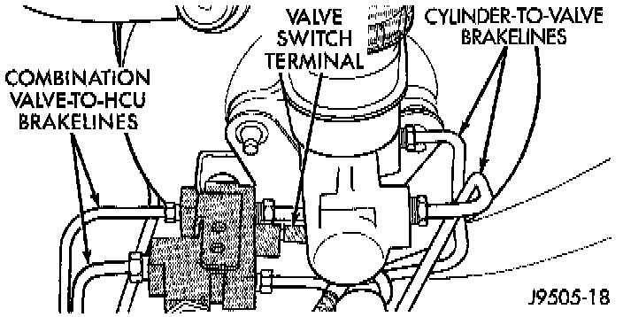
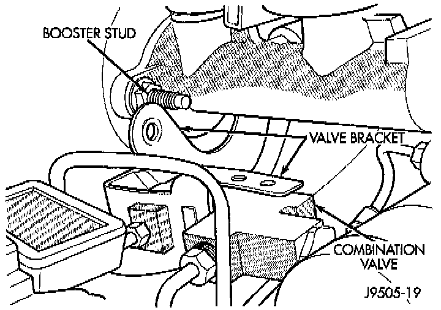

Brake Proportioning/Combination Valve: Service and Repair

REMOVAL
1. Remove brake lines that connect master cylinder to combination valve.
2. Disconnect brake lines that connect combination valve to Hydraulic Control Unit (HCU).
3. Disconnect wire from combination valve switch terminal. Be careful when separating wire connector as lock tabs are easily damaged if not fully disengaged.

4. Remove nuts attaching combination valve bracket to booster studs and valve bracket off booster studs.
INSTALLATION
1. Position valve bracket on booster studs and tighten bracket attaching nuts to 18 Nm (13 ft. lbs.).
2. Align and start all four brake line fittings in combination valve by hand to avoid cross threading. Then tighten fittings just enough to prevent leakage.
3. Connect wire to differential pressure switch in combination valve.
4. Tighten brake line fittings at master cylinder just enough to prevent leakage.
5. Attach HCU solenoid harness connectors to combination valve bracket.
6. Bleed brakes. Service and Repair